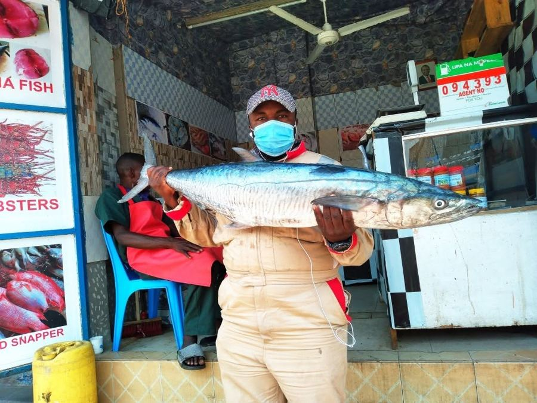

From Boat to Box: How We Get Fresh Fish From Shimoni to Your Door
Follow the journey of your order from the small-boat fishermen of Shimoni to your doorstep — and why that short, traceable chain makes our seafood taste different.

Most seafood you buy has traveled a long, anonymous road — boat to broker to wholesaler to distributor to store shelf, with days (sometimes weeks) passing along the way. At MombasaFish, we cut that chain down to almost nothing.
Where it starts
Every order begins with the small-boat fishermen working the waters off Shimoni, on Kenya's south coast. These aren't industrial trawlers — they're local fishermen who go out daily, using methods that have been passed down for generations and that don't strip the reef bare.
From the water to your cooler
When a boat comes in, we buy the catch that same day. No holding it in storage waiting for a bigger order, no passing it through a chain of middlemen who each add their own markup and their own delay. The fish is cleaned, packed in an insulated cooler with ice, and prepared for dispatch — often within hours of coming out of the water.
Why it matters
Two things come from a short supply chain: better fish, and a better deal for the people who catch it. Because we buy direct, more of what you pay goes to the fishing families of Shimoni rather than layers of distribution. And because the fish spends less time in transit before it reaches our packing table, it arrives at your door tasting like it should — like it just came out of the ocean.
That's the story behind every order: a boat, a name, a coastline, and a promise that what you're eating is exactly what it says it is.
Ready to taste the difference? Shop our current catch.